Ручное создание тестов
Преподавателю приходится вручную формировать банк вопросов, подбирать корректные варианты ответов, соотносить их с содержанием лекции и дополнительно контролировать методическую корректность итогового теста.
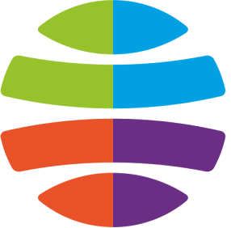
Кафедра прикладной информатики и информационных систем
Обучающийся: Енчу Роман Викторович
Руководитель: Басаргин Андрей Александрович
Новосибирск, 2026
Преподавателю приходится вручную формировать банк вопросов, подбирать корректные варианты ответов, соотносить их с содержанием лекции и дополнительно контролировать методическую корректность итогового теста.
Даже после составления теста сохраняется необходимость повторной валидации: проверки правильных ответов, полноты покрытия темы и соответствия контрольно-оценочного материала целям дисциплины.
Учебный материал, тестирование и аналитика нередко распределены по разным системам, вследствие чего преподаватель утрачивает единый контекст сопровождения дисциплины.
При отсутствии единого цифрового контура затрудняется оперативное выявление слабых тем, проблемных групп и обучающихся, которым требуется дополнительная методическая поддержка.
КампусПлюс формирует единый прикладной маршрут преподавателя: дисциплина → лекция → генерация или ручное создание теста → публикация → прохождение студентом → аналитика и точки роста.
Система не просто хранит тесты, а сопровождает преподавателя на всём цикле работы с учебным материалом и последующей интерпретацией результатов.
Разработать веб-сервис для мониторинга успеваемости с применением технологий искусственного интеллекта, объединяющий дисциплины, лекции, тестирование и результаты обучения в единой информационной среде и обеспечивающий преподавателю интерпретируемую аналитику по учебному процессу.
Изучить ограничения существующих образовательных сервисов и выявить прикладные проблемы преподавателя.
Определить роли пользователей, ключевые сценарии и структуру учебных сущностей сервиса.
Построить функциональные, процессные и информационно-логические модели предметной области.
Реализовать рабочие контуры преподавателя, студента и администратора с адаптацией под реальные сценарии.
Автоматизировать подготовку тестовых вопросов по лекционному материалу с возможностью ручного контроля.
Показать работоспособность сервиса на реальных данных и типовых пользовательских сценариях.
| Критерий | MMoodle | GGoogle Forms | SStepik | C+КампусПлюс |
|---|---|---|---|---|
| Связь тестов с лекциями | Частично | Нет | Частично | Да |
| AI-генерация вопросов | Нет | Нет | Нет | Да |
| Ручной конструктор тестов | Да | Базовый | Ограничен | Да |
| QR-доступ на занятии | Нет | Нет | Нет | Да |
| Аналитика по дисциплине, группе, студенту | Многоуровневая, требует навигации | Нет встроенной | На уровне курса | Да |
| Быстрый сценарий для преподавателя | Требует предварительной настройки | Ограничен формой опроса | Ориентирован на формат курса | Да |
Анализ показал, что существующие решения либо предполагают значительную предварительную настройку, либо не обеспечивают связи между лекционным материалом и контролем знаний. Это обосновывает разработку специализированного веб-сервиса, ориентированного на прикладной маршрут преподавателя.
КампусПлюс проектируется не как абстрактная LMS, а как рабочий инструмент сопровождения дисциплины: от лекции до интерпретации результатов по конкретной группе.
| Критерий | DDjango | NNode.js + Express | AASP.NET Core | FFastAPI |
|---|---|---|---|---|
| Скорость старта проекта | Средняя | Средняя | Средняя | Высокая |
| Интеграция с Python AI | Да | Ограничено | Ограничено | Да |
| Асинхронная обработка | Частично | Да | Да | Да |
| Серверный HTML | Да | Через шаблоны | Через Razor | Да |
| Избыточность для MVP | Выше необходимой | Зависит от стека | Выше необходимой | Оптимальная |
В качестве платформы разработки выбран FastAPI в связке с Jinja2, HTML/CSS/JS, SQLite/PostgreSQL и AI-модулем генерации тестов. Такой набор обеспечивает быстрый прототип, ролевую модель и удобную интеграцию внешних моделей ИИ.
Ключевой пользователь системы — преподаватель. Именно его прикладной маршрут определяет основную ценность сервиса: создание контента, подготовка тестов, публикация доступа и анализ результатов.
Студент участвует в прохождении тестов и получает обратную связь, а администратор сопровождает структуру пользователей и назначений.
В центре проектирования находится не отдельный тест, а цепочка учебных сущностей: дисциплина → лекция → тест → попытка → аналитика. Это позволяет интерпретировать результаты в предметном контексте.
Преподаватель получает доступ к студентам не напрямую, а через назначение дисциплина + группа. Такая схема точнее отражает реальный учебный процесс и удобна для мониторинга успеваемости.
Ключевым элементом предметной области являются назначения преподаватель → дисциплина → группа. Именно они определяют, какие обучающиеся получают доступ к тестам конкретной дисциплины и какие результаты попадают в преподавательскую аналитику.
Структура БД поддерживает несколько преподавателей у группы, несколько групп у одной дисциплины, публикацию тестов на основе лекций и последующее накопление попыток и ответов для персональной и групповой аналитики.
Таблицы teaching_assignments и teaching_assignment_blocks обеспечивают управляемое открытие доступа к дисциплине и фиксируют ручное отключение группы от дисциплины без разрушения накопленной аналитики.
Клиентский интерфейс построен на HTML, CSS и JavaScript, серверная часть реализована на FastAPI и Jinja2, а хранение данных обеспечивается SQLite или PostgreSQL. Генерация тестов опирается на внешний AI-провайдер и внутреннюю логику нормализации вопросов.
Адаптивные страницы преподавателя, студента и администратора, ориентированные на реальную эксплуатацию.
Маршруты, авторизация, обработка лекций, публикация тестов и построение аналитики.
Формирует тестовые вопросы по лекции и передаёт их преподавателю на валидацию и редактирование.
Хранит пользователей, группы, дисциплины, лекции, тесты, попытки и ответы.
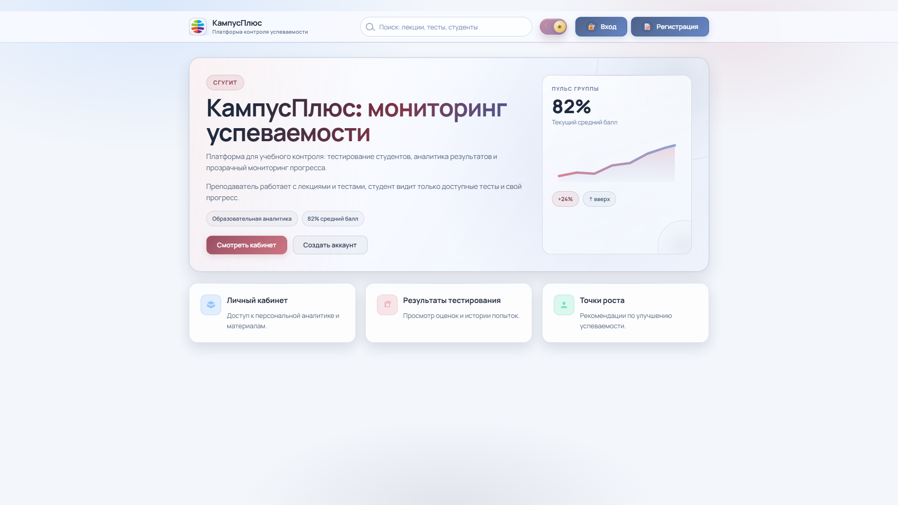
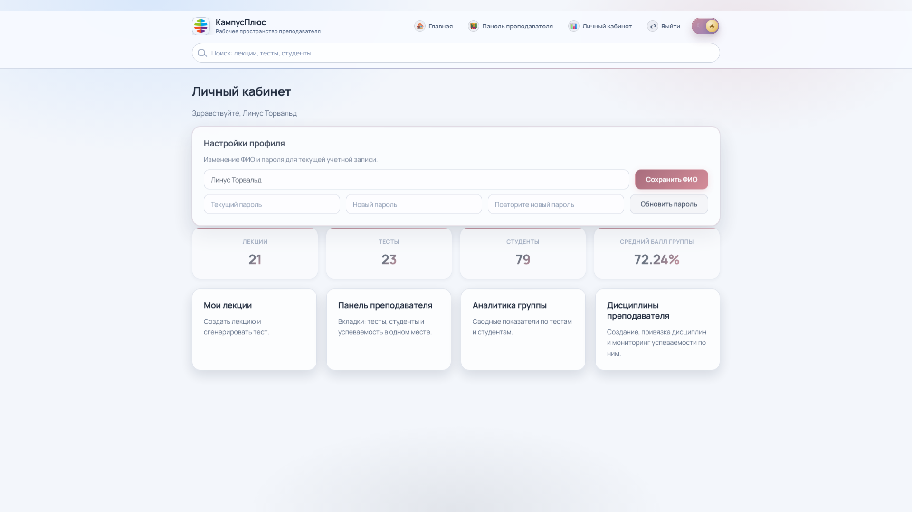
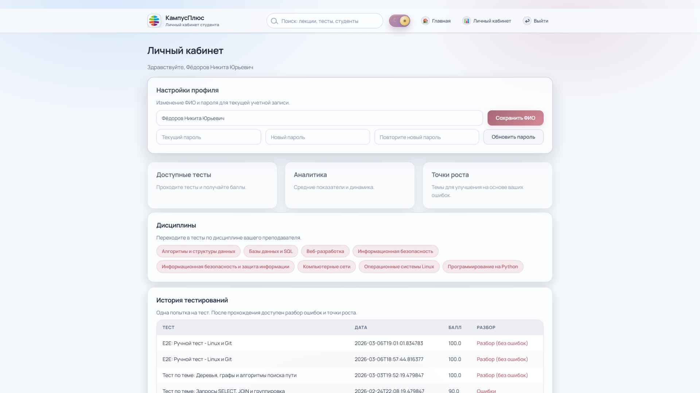
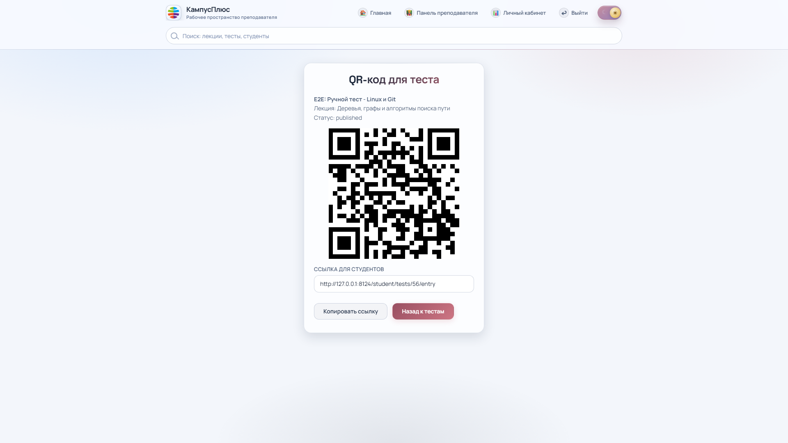
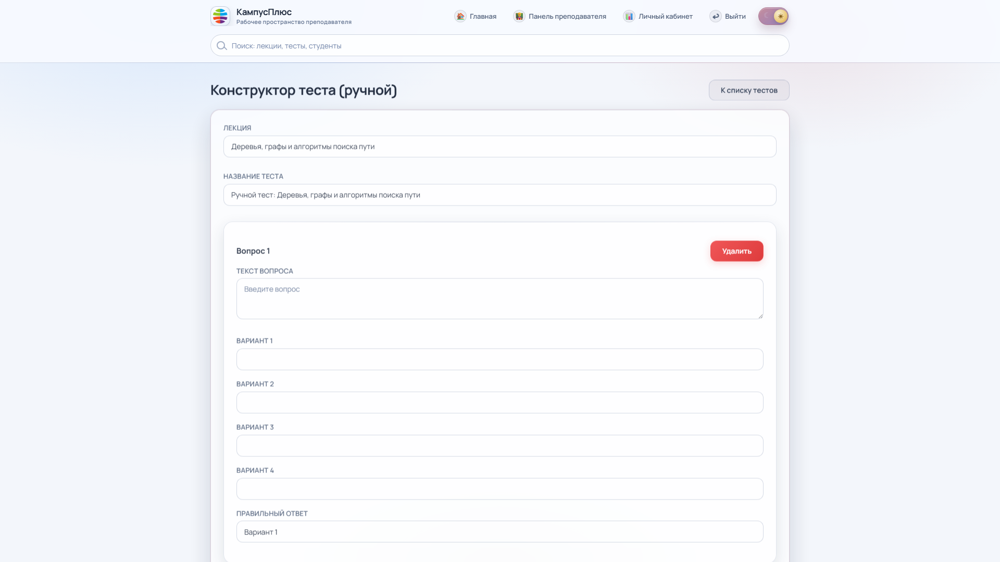
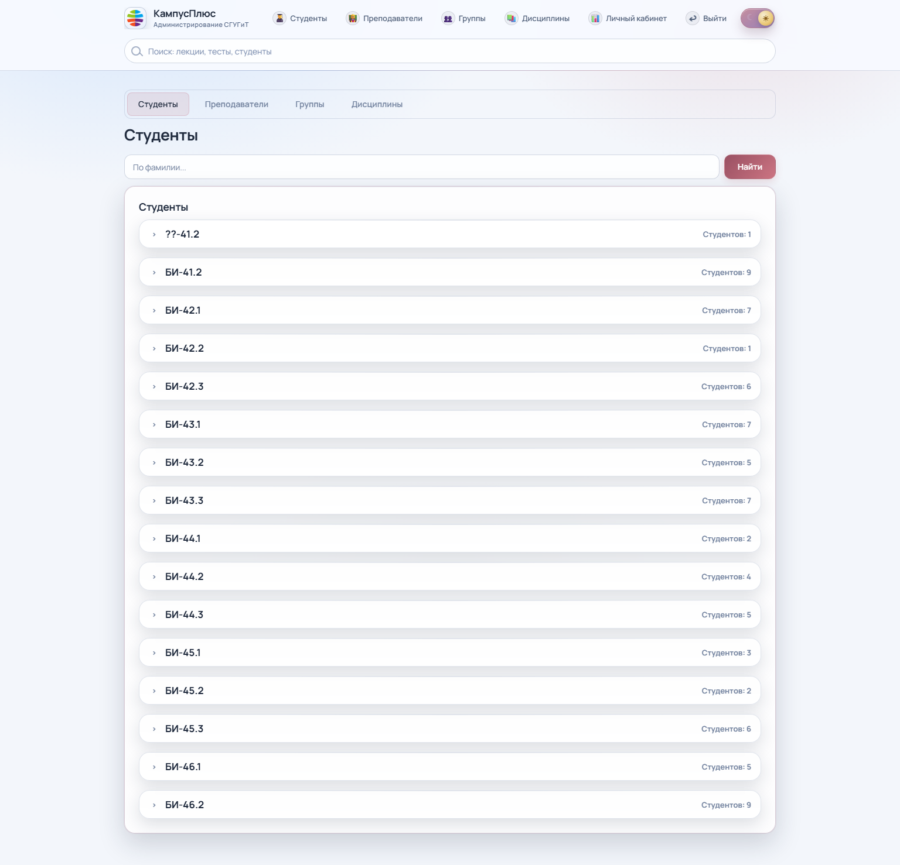
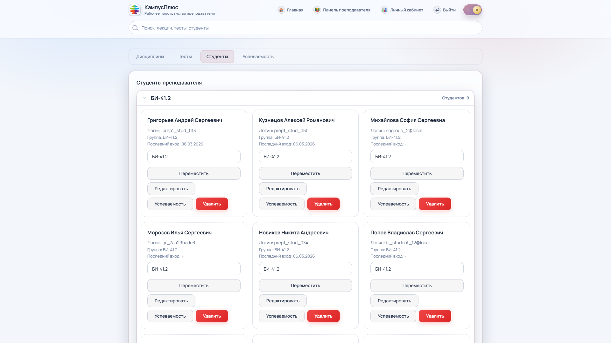
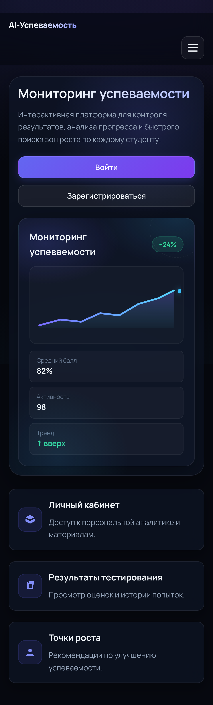
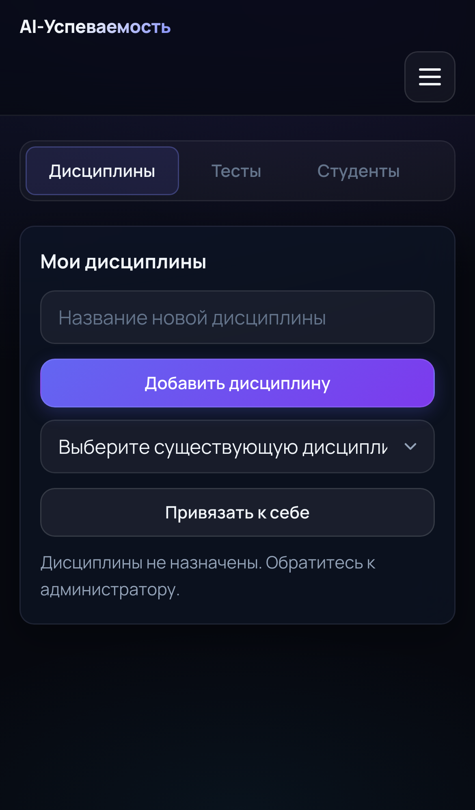
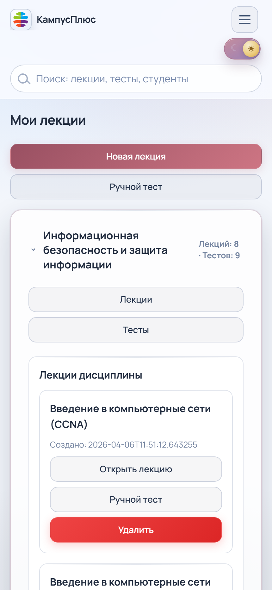
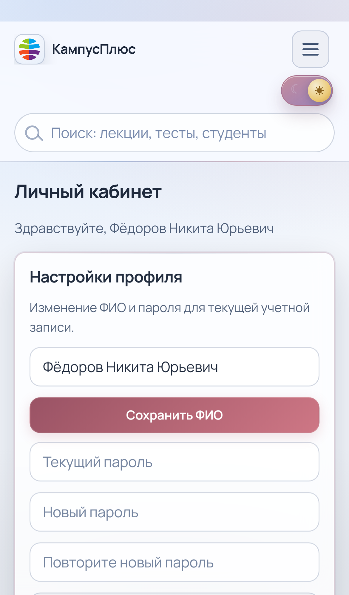
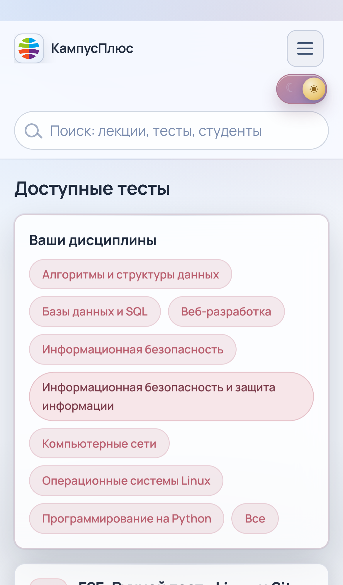
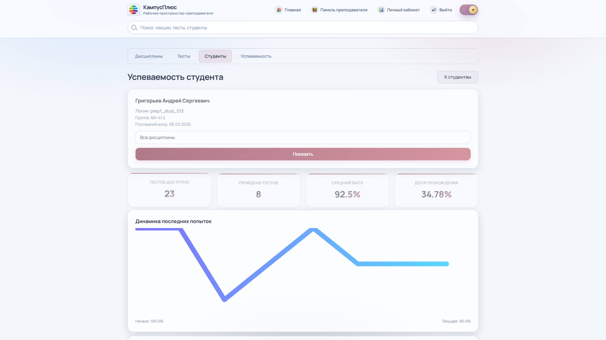
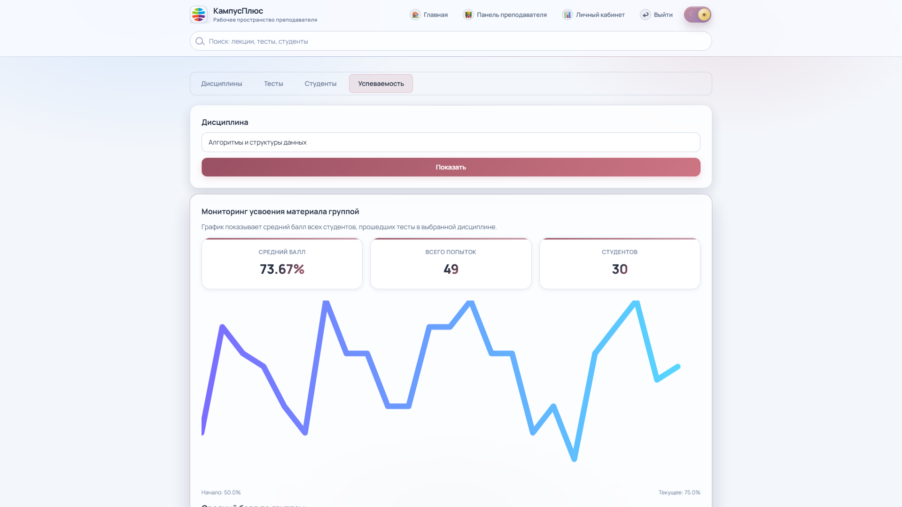
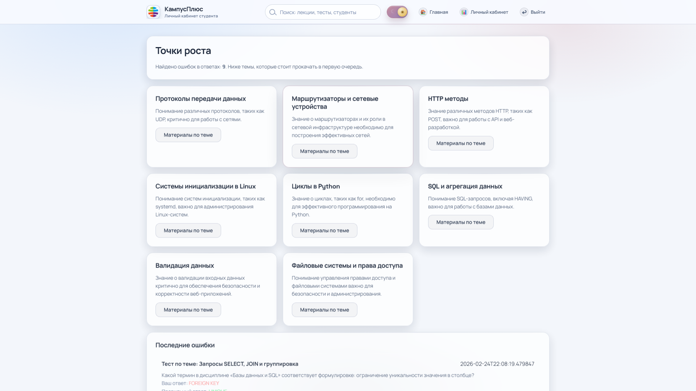
| Сценарий | Проверяемое действие | Ожидаемый результат |
|---|---|---|
| Авторизация | Вход под разными ролями, восстановление пароля, смена пароля | Пользователь попадает только в свой контур, сессии изолированы, доступы разграничены |
| Маршрут преподавателя | Создание дисциплины, лекции, теста и публикация через QR-код | Сервис сохраняет материалы, публикует тест и передаёт доступ студенту |
| Маршрут студента | Регистрация, прохождение теста, просмотр аналитики и точек роста | Результаты фиксируются, аналитика строится на основании реальных ответов |
| Маршрут администратора | Управление пользователями, группами, дисциплинами и назначениями | Структура данных поддерживается в корректном состоянии |
| Ролевая модель | Попытка открыть чужой тест или чужую административную страницу | Сервис запрещает несанкционированный доступ и перенаправляет пользователя |
Среднее время ответа
48 мсПропускная способность
142 req/sУспешных запросов
99.8%P95 latency
174 мсРазработан прикладной веб-сервис для мониторинга успеваемости с применением технологий искусственного интеллекта, объединяющий лекционный материал, тестирование, публикацию доступа и предметную аналитику.
Кафедра прикладной информатики и информационных систем
Обучающийся: Енчу Роман Викторович
Руководитель: Басаргин Андрей Александрович
8 (995) 101-42-75
yenchuroman@gmail.com